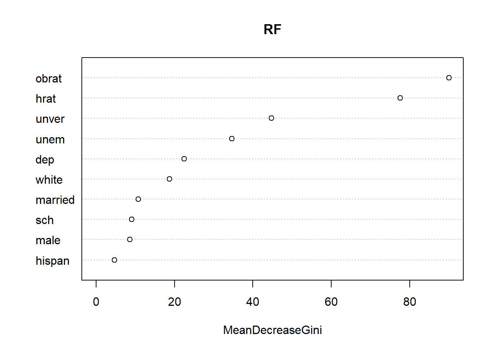

Fac <- function(n){
x <- 1
for (i in 1:n) {
x <- x*i
}
return(x)
}
Fac(10)8 Machine Learning
If one day we find ourselves in a Terminator dystopia, you can thank the data scientists of the early 21st century for their marvelous invention of Machine Learning.
But what are we talking about? Machine Learning (ML) enables a computer-controlled system, such as a program, AI or robot, to adapt its responses or behaviors to the situations it encounters, based on the analysis of past empirical data. More generally, it’s a field of study in artificial intelligence that relies on statistical approaches to give computers the ability to “learn” from data.
In simpler terms, this involves running an algorithm on a training dataset to create a model. This model is then tested on a “test” dataset, and the number of predictions that actually came true is observed (this is called accuracy). This can then be improved by changing model parameters or with a continuous stream of new data.
8.1 Different types of algorithm
But let’s start with a simple example. We’re going to create a function \(Fac\) that returns the factorial value of an integer:
\[Fac(n) = n! = n \times (n-1) \times (n-2) \times ... \times2 \times 1 \]
A perfect example of a loop! In fact, to calculate factorial \(n\), you must first calculate factorial \(n-1\), which implies calculating factorial \(n-2\) and so on. And therefore work in stages, exactly \(n\) stages. We’ll create an index i, which will move between 1 and n and carry out the n tasks we’ve assigned to it.
In almost all computer languages, the loop will always begin with for (i in 1:n) and then followed by the statement. In R we have :
for (value in sequence){ statement }
Exercise 1: copy paste the last code and find \(Fac(20)\). Try witht others numbers but be careful, not too high!
8.2 A GLM prediction
Let’s start with the generalized linear model: we’re going to predict whether or not a person will be granted a mortgage. To do this, we’ll use the loanapp database available in the package(wooldridge), which we’ll filter on certain variables to make our work clearer:
library(wooldridge)
library(tidyverse)
library(stargazer)
df <- as.data.frame(loanapp)
df <- select(df,approve, hrat, obrat, dep, sch, white, hispan, unem, male, married, unver)
head(df) approve hrat obrat dep sch white hispan unem male married unver
1 1 17.63 34.5 0 1 1 0 3.2 NA 0 0
2 0 22.54 34.1 1 1 1 0 3.2 1 1 0
3 1 19.00 26.0 0 1 1 0 3.9 1 0 0
4 1 24.00 37.0 0 1 1 0 3.1 1 1 0
5 1 25.10 32.1 0 0 1 0 4.3 1 1 0
6 1 21.00 33.0 0 0 1 0 3.2 1 0 0Where:
- approve: 1 if mortgage is approved, 0 otherwise
- hrat: housing expenditures, percent total income
- obrat: other obligations, percent total income
- dep: number of dependents
- sch: 1 if > 12 years schooling
- white: 1 if white, 0 otherwise
- hispan: 1 if hispan, 0 otherwise
- unem: unemployment rate by industry
- male: 1 if male, 0 otherwise
- married: 1 if married, 0 otherwise
- unever: unverifiable info in the file
Now we can get down to business… We’re going to split our sample in two, one for training and one for testing, with the first 1,400 lines for training and the remainder for testing.
Then we perform a probit regression (to calculate the probabilities that approve =1) using the glm function for Generalized Linear Model:
df.train <- df[1:1400, ]
df.test <- df[-c(1:1400), ]
model <- glm(approve ~ hrat + obrat + dep + sch + white + hispan + unem + male + married + unver,
family=binomial(link='probit'), data=df.train)
stargazer(model, type = "text", single.row = TRUE, header = FALSE)
=============================================
Dependent variable:
---------------------------
approve
---------------------------------------------
hrat 0.017** (0.008)
obrat -0.036*** (0.007)
dep -0.013 (0.046)
sch 0.065 (0.112)
white 0.755*** (0.131)
hispan 0.262 (0.204)
unem -0.037* (0.020)
male -0.114 (0.132)
married 0.227** (0.112)
unver -1.678*** (0.185)
Constant 1.518*** (0.287)
---------------------------------------------
Observations 1,384
Log Likelihood -431.198
Akaike Inf. Crit. 884.397
=============================================
Note: *p<0.1; **p<0.05; ***p<0.01Once the coefficients of the regressors have been calculated by our model, we will predict the probability of obtaining a credit on the test sample. For simplicity’s sake, we’ll assume that credit is granted if the probability of obtaining it is greater than 0.5.
Finally, we create a table showing the number of credits granted or not, based on what the model has predicted:
df.predict <- predict(model, newdata=df.test, type='response')
head(df.predict) 1401 1402 1403 1404 1405 1406
0.9596548 0.9474160 0.9613475 0.9222669 0.9347621 0.9203146 # Percentage of good predictions
df.predict <- ifelse(df.predict > 0.5, 1, 0)
PredictionAccuracy <- mean(df.predict == df.test$approve)
# Transform into factors
df.predict <- factor(df.predict, levels = c(0,1), labels = c("predicted reject", "predicted accept"))
df.test$Decision <- factor(df.test$approve, levels = c(0,1), labels = c("rejected", "accepted"))
# Create the table
table(df.predict,df.test$Decision)
df.predict rejected accepted
predicted reject 17 7
predicted accept 54 509prop.table(table(df.predict,df.test$Decision),2)
df.predict rejected accepted
predicted reject 0.23943662 0.01356589
predicted accept 0.76056338 0.98643411Our model was wrong in only 11% of cases. That’s not so bad!
8.3 Random Forest
library(randomForest)
df$Decision <- factor(df$approve, levels = c(0,1), labels = c("rejected", "approved"))
RF <- randomForest(Decision ~ hrat + obrat + dep + sch + white + hispan + unem + male + married + unver, ntree=5000, data = df, na.action = na.roughfix)
print(RF)
Call:
randomForest(formula = Decision ~ hrat + obrat + dep + sch + white + hispan + unem + male + married + unver, data = df, ntree = 5000, na.action = na.roughfix)
Type of random forest: classification
Number of trees: 5000
No. of variables tried at each split: 3
OOB estimate of error rate: 11.76%
Confusion matrix:
rejected approved class.error
rejected 49 195 0.79918033
approved 39 1706 0.02234957varImpPlot(RF)
predictors <- data.frame(hrat=20, obrat=25, dep=0, sch=0, white=0,
hispan=1, unem=3.2, male=0, married=1, unver=1)
predict(model, predictors, type="response") 1
0.3580895 predict(RF, predictors, type="response") 1
rejected
Levels: rejected approved8.4 Learning by doing
Along with Titanic, the Iris database is a must-have in any machine learning course! It’s all about grouping iris flowers by type, letting the computer choose groups according to the characteristics of the petals and sepals. Run the following code line by line, and try to understand every step!
K-means clustering
library(ggplot2)
library(cluster)
df <- iris
View(df)
ggplot(df, aes(Petal.Length, Petal.Width)) + geom_point(aes(col=Species), size=4)
set.seed(101)
irisCluster <- kmeans(df[,1:4], center=3, nstart=20)
irisCluster
table(irisCluster$cluster, df$Species)
clusplot(iris, irisCluster$cluster, color=T, shade=T, labels=0, lines=0)8.5 Exercices
Using a loop, display the squares of the numbers from 1 to 10 (use print() to see the results).
What loops are used to loop until a specific condition is met?
I want to perform a vectorization calculation on a list of objects. I use:
Create a “Func” function that gives the cube root of a number “x”.
I didn’t think I’d spend so much time screwing up..